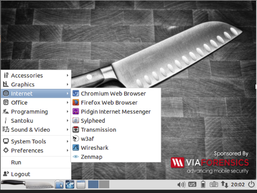

Sobre o trabalho.
Esse trabalho tem por principal função mostrar a instalação e as primeiras impressões sobre a ferramenta W3af na disciplina de Segurança de Redes de Computadores na UNICAP.
O que é o W3af?
O W3af (Web Application Attack and Audit Framework) é uma ferramenta que explora as vunerabilidadade de qualquer
tipo de sistema web, informando e demonstrando ao usuário asque o mesmo deixa para qualquer tipo de pessoa mal intensionada.
Mesmo com um filosofia voltada para a comunidade, e a segurança dos sistemas web, o W3af é uma ferramenta tão podorosa
e rubusta, que não tem apenas ferramentas para defesa e consultoria de vunerabilidades, este também se mostra capaz de usufruir
desses brechas para simular
ataque real ao sistema
Pré instalação
Vamos conversar um pouco sobre os pré requisitos de instalação. Qualquer sistema operacional vai rodar o W3af, entretanto, não existe pre requisitos para Windows, basta apenas baixar e rodar a aplicação. No entanto, para qualquer UNIX é preciso ter o git atualizado e o python em uma versão superior a 2.7
GIT:
sudo apt-get install git
Python:
sudo apt-get install git
Considerações para Instalação
git clone https://github.com/andresriancho/w3af.git cd w3af/ ./w3af_console ./tmp/w3af_dependency_install.sh
A instalação da ferramenta é bem simples. Lembrando que é preciso ter o git instalado em sua máquina.
Caso esteja vendo isso de um computador com windows, sugiro que baixe
diretamente do site oficial, ou instale uma versão do Ubuntu modificada, voltada para as pessoas que tem
o mesmo interesse que você, a busca por conhecimentos Hacker. Tanto o
Back Box,
quanto o Kali Linux
já apresentam o W3af instalado por padrão.( Clique em cada um dos links para mais informações sobre essas versões
modificadas do linux
).

Sem dúvidas a melhor forma de usar o W3af, procurar uma versão de linux modificada para hackers
Caso queira instalar o pelo MasOSX o processo é bem mais simples que uma instalação no Windows.
sudo xcode-select --install sudo port selfupdate sudo port upgrade outdated sudo port install python27 sudo port select python python27 ./w3af_console ./tmp/w3af_dependency_install.sh
Para a atualização do W3af ( por instalações via terminal ). Basta executar o seguine código...
cd w3af/ git pull
Isso vai trazer a o código mais atualizado do sistema. Para qualquer versão UNIX você pode fazer isso! ( Para manter o W3af atualizado em versões de Windows, sugiro que baixe de novo do site oficial, ou clique em settints > Update, o submenu pode mudar dependendo da sua versão da ferramenta ).
O criador
Esta ferramenta foi criada peo argentino Andrés Riancho. Andrés um profissional na área de segurança de redes, tinha como
projeto pessoal um sistema para ajudar seus colegas desenvolvedores a não cometer erros que podiam expor qualquer tipo de
funcionalidade de seus sistemas.
Essa iniciativa tomou forma quando ele juntou todo conhecimento que tinha sobre segurança de redes ao seu conhecimento de
programação em Python, criando assim uma ferramenta altamente escalável que tinha como principais funções combater os mal-intencionados
e tornar o mund Web cada vez mais seguro, longde fragilidades de segurança.
Módulos
Não existe nenhum tipo de mistério em manipular o W3af, sua interface gráfica é bem intuitiva.. Como mostra a imagem a seguir, Basta selecionar a URL em que deseja verificar a vulnerabilidade e clicar em start!
Support or Contact
Having trouble with Pages? Check out our documentation or contact support and we’ll help you sort it out.